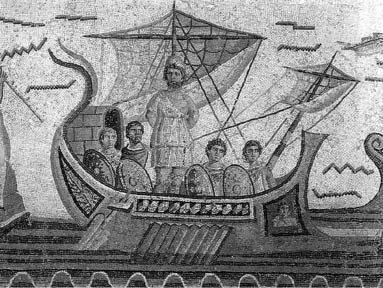
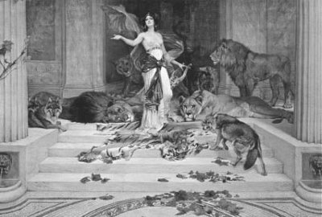

Sirenler, güzeller güzeli üç genç kızdılar. Onlar Napoli kıyılarında ya da Akdeniz'in sayısız adalarından birinde yaşarlardı gönüllerince... Bu kızlar bir araya geldiğinde biri flüt çalar, öteki ona liriyle eşlik eder ve üçüncüsü de, duyanları büyüleyen o yanık ezgilerine başlardı. Ve bu ezgiler, Akdeniz göklerinin derinliklerine doğru yana yakıla tırmanır giderdi. Sonra da enginleri köpük köpük dalgalandırıp şahlandıran azgın fırtınaları susturmak için, tırmandığı mavi göklerden bir tavuskuşu gibi süzülüp denizin yüzeyine, bol tüylü kanatlarıyla yayılıverirdi... İşte o zaman bu ezginin dışında ne varsa her şey suspus olurdu. Ve bütün canlılar gibi denizlerde seyreden serüvenci yolcular da, bu gizemli ezgilere bütün varlıklarıyla kilitleniverirlerdi...
Ne var ki Sirenlerin bu insanı alıp götüren büyülü ezgilerini duymak, denizciler için bir yıkım olurdu. Çünkü bu kızların yanık ve büyülü ezgileri, Ege ve Akdeniz'de seyretmekte olan bir gemi kaptanının ve de kürekçilerinin kulaklarına ulaştığında artık onları kimseler tutamaz olurdu. Bilinçlerini ve istençlerini yitirirler, yalnızca bu ses ve musikinin insanı çekip götüren sarmallarına dolanır giderlerdi.

Odisseus, Sirenleri dinlerken
Artık bu aşamadan sonra kaptanla birlikte bütün kürekçiler ve onların yönlendirdiği gemi, doğruca Sirenlerin bulunduğu limana doğru pupa yelken gider, oradaki kayalıklara çakılırdı! Ve kayalara çakılıp parçalanan bu gemiden sağ salim çıkanları da Sirenler, lir ve flüt ezgileriyle yaşadıkları adaya buyur ederlerdi. Sonra da gemiciler, onların dillendirdikleri bu ezgileri dinleye dinleye kendilerinden geçer giderler ve bir daha ilk hallerine dönmezlerdi...
Odisseya destanında Homeros, kadın gövdeli ama kuş kanatlı güzel kızlar olarak betimliyordu bu Sirenleri. Ortaçağda da sanatçılar, kanatsız ama kadın gövdeli ve balık kuyruklu denizkızları olarak canlandırıyorlardı onları...
Tanrıça Kirke; Troya savaşı sonrası ülkesine dönüş yolculuğuna başlayacak kral Odisseus'u uğurlarken, yolculuğu sırasında Sirenlerin büyüleyici ve öldürücü ezgileri konusunda uyarıda bulunmuştu:
Sirenlerle karşılaşacaksın sen en önce,
onlar büyüler yakınlarına gelen bütün insanları,
kim yaklaşırsa bilmeden ve dinlerse onları yandı!
Sirenler çayırda çınlayan ezgileriyle büyüler onu...
Bu yüzden tanrıça Kirke; Odisseus'un gemisini çeken kürekçilerin kulaklarını balmumuyla iyice tıkamalarını öğütledi:
Tatlı balmumuyla tıka ki, Sirenlerin ezgilerini dinlemesinler,
İstersen dinle sen, ama bağlasınlar ayakta seni.
Hızlı geminin içinde halatlarla bağlasınlar,
Kollarından, bacaklarından orta direğe,
ondan sonra dinle Sirenleri doya doya...
Odisseus, katıldığı Troya savaşları sonrası gemileriyle ülkesine dönerken, Sirenlerin yaşadığı limana yaklaşınca, tanrıça Kirke'nin öğütlerini anımsadı hemen... Ne var ki bu ünlü Sirenlerin ezgilerini de doya doya dinlemek istiyordu. Çünkü Odisseus, dünyanın gizemlerini hem aklıyla, hem duygularıyla görerek dokunarak duyarak öğrenmek istiyordu. Bu yüzden ilkin kürekçilerinin kulaklarını balmumuyla kapattırdı. Sonra da kendi kollarını ve bacaklarını kalın urganlarla geminin ortadireğine bağlattı. Artık Sirenlerin o büyüleyici ve karşı konulamazcasına kendine çeken ezgisini dinleyebilmenin heyecanı ve coşkulu beklentisi içine girdi. Ve gerçekten de bir süre sonra o büyüleyici ezgiyi duymaya başlar başlamaz, kendini sıkı sıkıya bağlayan urganlardan boşanıp sesin geldiği yöne doğru bütün gücüyle koşup gitmek istedi... Ve bu sese doğru koşma isteğinin o anlatılamaz yakıcılığıyla boğuşup çırpınmaya başladı... Ne var ki kulakları balmumuyla tıkalı olduğu için kürekçiler hiçbir şeyin ayırdında değildiler; yalnızca önceden belirlenmiş bir menzile doğru durmadan kürek çekiyorlardı!.. Bir süre sonra Sirenlerin ezgileri bittiğinde kendini çok rahatlamış buldu Odisseus. Çünkü duymayı çok arzu ettiği o öldürücü ezgiyi; sonuna dek dinlemeyi başarabilmiş tek insandı!..

Tanrıça Kirke
Bu güzeller güzeli üç Sirenler, genellikle çok ürkünç yaratıklarmış gibi betimleniyordu antikçağda. Oysa bu kızlar birbirleriyle çok iyi anlaşıyorlardı. Tanrıça Demeter'in kızı güzel Persefone (Persephone) örneğin, onların çok yakın arkadaşıydı. Üstelik Persefone'ye içtenlikle bağlıydılar. Hatta bu bağlılığı kanıtlayan çok önemli bir serüven de yaşamıştı tanrıça Persefone. Ve bu olay haliyle hiç unutulmadı; ne tanrıların ne de insanların dünyasında...
Sirenlerle birlikte bir çayırlıkta eğlendikleri bir gün, yeraltındaki Ölüler Ülkesi'nin sevimsiz tanrısı Hades yeryüzüne çıkıp, Persefone'yi kaptığı gibi kayıplara karıştı! Bunun üzerine Sirenler, yitik arkadaşlarının bulunabileceği yere anında ulaşabilmek için kendilerine kanat taktılar ve onu her yerde aramaya başladılar. Ne var ki kızı kaçıran tanrı Hades, onu yeraltındaki Ölüler Ülkesi'ne götürüp oradaki sarayına kapatmıştı çoktan! Birkaç nar tanesi de yedirdiğinden tanrıça Persefone, artık o karanlık ülkeden ayrılmak istemiyordu... Tanrıça Demeter bir süre sonra kızının kaçırılış serüvenini, her şeyi gören güneş tanrısı Helyos'tan öğrenmişti. Gene de tanrıça Demeter, kızına iyi göz kulak olmadıkları gerekçesiyle, ama haksız yere Sirenleri cezalandırdı. Bu yetmiyormuş gibi, sırf kıskançlık yüzünden, ozanların esinperisi ve tanrıların şarkıcıları olan güzel Musa'ların da hışmına uğradılar!..
Çağlar boyunca birçok ozan ve sanatçı, Sirenler denen bu denizperilerinin güzelliği ve öldüren ezgileri üzerine sayısız kitaplar yazdı; heykeltıraşlar ve ressamlar onları heykellerinde ve resimlerinde canlandırmaya çalıştı. Çok daha sonraki yüzyıllarda "siren" sözcüğü, "acı bir çığlık" anlamına dönüştü... Ne var ki bu üç güzel kızın ezgilerinde bir çığlık gibi dillendirdikleri şeyi, tam olarak kimseler çözemedi...
Aslında onlar, yaşıyor olmanın o dile gelmez mutluluğunu başkalarına aktarmak istiyorlardı yalnızca. O yüzden de bu güzel Sirenler, dünyamızda yaşadıkları acı tatlı serüvenleri çığlık gibi coşkulu ezgilere dönüştürüyorlardı hep. Ve yalnız âşıklar ya da denizlerin ve de kıtaların gizemlerini çözmeye çalışan serüvenciler, bu gizemli ezgileri duyar duymaz büyüleniyorlar; gemilerini pupa yelken onların yanına doğru yönlendiriyorlardı...
Sirenlerin ezgilerinde dillendirdikleri sevincin coşkusuna kapılan bu serüvenciler, bir daha onların yanından ayrılamıyorlardı...